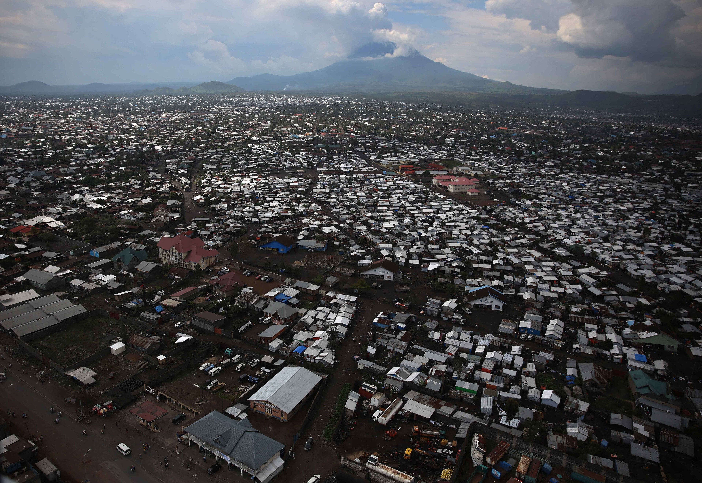

Is Congo's Hunger a Food Crisis, or a Crisis of Access, Protection and Trust?
Eastern DRC is not facing separate emergencies that happen to overlap. It is facing one system of collapse, and hunger will be moved by access, protection and trust, not by tonnage alone.

1. Executive judgement
Eastern Democratic Republic of the Congo is not facing separate emergencies that happen to overlap. It is facing one system of collapse in which fighting empties the fields, displacement breaks the markets, disease closes the clinics and schools, and hunger does the quiet killing between the headlines. The latest IPC alert, reported by UN News on 30 October 2026, forecasts that 28.8 million people across the DRC will face high levels of acute food insecurity through December, and projects 30.3 million from January to June. Those numbers will not be moved by food tonnage alone. They will be moved by whether a mother in Walungu, a farmer in Djugu or a trader in Masisi can reach a field, a market, a clinic and a school safely, every day. Access, protection and trust are the response.
2. The catastrophe today
Displacement: movement without arrival
The Congolese government told the UNHCR Executive Committee in Geneva on 12 October 2026 that, as of 31 August 2026, the country counted 6,100,000 internally displaced people, while 1,324,528 Congolese refugees were living in African countries and 601,675 refugees and asylum seekers were hosted on Congolese territory. Sida's September 2026 crisis analysis puts the internal figure at approximately 6.4 million displaced people alongside 5.5 million returnees. Return, however, is not recovery. UNHCR's regional update for December 2025 to March 2026 recorded around 40,500 Congolese refugees returning spontaneously to South Kivu after the Burundi border reopened on 23 February 2026, while UNHCR's own non-return advisory still cautioned that conditions for safe, dignified and sustainable return had not been met broadly across eastern DRC. People are going back because camps and exile have become unliveable, not because home has become safe. That is movement, not solution.
The geography of displacement follows the front lines: North Kivu and South Kivu, where fighting between the Armed Forces of the DRC (FARDC) and the AFC/M23 rebellion, now joined by Joseph Kabila's Front for the Refoundation of the Nation (FRN), launched in Goma in October 2026 with M23 cadres among its deputies, has held provincial capitals and key axes since early 2025; Ituri, where CODECO, Zaire and ADF violence continues alongside intercommunal killing; and northern North Kivu, where ADF attacks remain a standing cause of flight. OCHA reported on 30 October 2026 that clashes at the Plaine Savo site in Ituri had reportedly killed at least three displaced people, injured five others, and forced the suspension of water, health and nutrition services for some 76,000 people at that one site. When a displacement site becomes a battlefield, the last layer of protection a family has is gone.
Hunger: the fields are there, the access is not
IPC reported that 28.8 million people, 23 per cent of the population analysed, are forecast to experience high levels of acute food insecurity (IPC Phase 3 or above) through December 2026, including more than 3.6 million people in Emergency (IPC Phase 4). For January to June, IPC projects 30.3 million people in Phase 3 or above, including 4.2 million in Phase 4. These are projections, but the direction is not in doubt. The east carries the heaviest load: 10.4 million people in Phase 3 or above in North Kivu, South Kivu and Ituri alone, and four territories, Djugu, Fizi, Shabunda and Walungu, classified in Phase 4. The drivers IPC names are conflict and displacement first, then the Ebola outbreak, recurrent epidemics, rising food and fuel prices, floods and the expected impact of El Niño, compounded by declining assistance.
From the field, that list describes a broken chain, not a missing harvest. A household that flees at planting does not harvest, and a market that opens under taxation by an armed actor transfers the cost to the poorest buyer. Hunger in eastern Congo is produced at each broken link.
Children: a generation being spent
Children absorb every layer of this crisis at once. UNICEF reports that more than 1.2 million children under five in the DRC are in need of treatment for severe acute malnutrition. Save the Children, analysing DRC Education Cluster data in April 2026, reported that armed groups attacked at least 587 schools between March 2025 and February 2026, affecting over 285,500 children, more than three times the number attacked in the preceding twelve months; 330 were destroyed and 191 seized. The Education Cluster figure cited in the same analysis puts around 1.18 million children in eastern DRC out of education because their schools are closed, and Education Cannot Wait noted in February 2026 that 8 million children are out of school nationwide.
Behind those figures sit three risks field workers know well. A malnourished child in a household that is skipping meals, as CARE documented this week in Ituri and South Kivu, faces the next infection with no reserves. A child out of school in a displacement site is exposed to labour, early marriage and recruitment: forced recruitment is named among the acute protection risks in current crisis analyses, and every month of closed classrooms enlarges the pool of adolescents with no income and no prospect, precisely the pool armed groups draw from. And children are losing caregivers: Tom Fletcher warned Member States on 1 September 2026 that children are losing parents and caregivers to Ebola, making them more vulnerable to exploitation and trafficking. A crisis that takes the parents, closes the school and empties the cooking pot is not interrupting a childhood. It is consuming one.
Women: carrying the household, carrying the risk
In displacement, the household that survives is usually the household a woman is holding together: fetching water and firewood along unsafe routes, trading under extortion, caring for the sick during an epidemic, and deciding which child eats when there is not enough. CARE's release of the IPC analysis on 30 October 2026 states that women and girls constitute the majority of confirmed Ebola cases, with pregnant and breastfeeding women facing particularly severe consequences, and describes women, the backbone of local food production, as trapped in a cycle of displacement, hunger, disease, violence and sexual violence.
The protection data behind that description is stark even at its most conservative. UNFPA reported over 56,000 cases of gender-based violence in North Kivu province alone in 2024, and nearly 500 reported cases of sexual violence in a single week around Goma during the 2025 escalation, including more than 150 involving children. ITUC-Africa, citing UNFPA recording, stated in June 2026 that over 80,000 cases of rape were recorded in eastern Congo between January and September 2025, and reported a near total shortage of post exposure prophylaxis kits across the east that left survivors without basic medical care for months. Recorded cases in a conflict zone are a floor, never a ceiling. Maternal care is collapsing along the same fault line: UNFPA documents facilities in the east struggling with looted medicines and drastic aid reductions, while Kyeshero Hospital in Goma records 200 to 300 deliveries a month under crisis conditions. When the clinic cannot guarantee safe delivery or post rape care, women pay for the war twice, once in the attack and once in the absence of care.
Security drivers
Four dynamics drive the insecurity. First, the FARDC confrontation with the FRN and AFC/M23 forces in the Kivus, sustained, according to the United States Treasury, by Rwandan support: on 28 October 2026 the US sanctioned Rwanda's Ministry of Defence and the Zigama Credit and Savings Society, stating that the Rwanda Defence Force had deployed thousands of troops across North and South Kivu, operated alongside the rebels, supplied equipment, and that a Zigama branch had enabled gold transport from rebel held territory into Rwanda. Rwanda denies backing the rebels and states that its position rests on unmet Washington Accords commitments to neutralise the FDLR, the Hutu militia rooted in the 1994 genocide. What is verifiable on the ground is that fighting, drone strikes and displacement continue. Second, ADF violence in Ituri and northern North Kivu, self financing and predatory against civilians. Third, CODECO, Zaire and local militia violence in Ituri, Tanganyika and elsewhere, where intercommunal grievance over land and identity is armed and organised. Fourth, Ebola itself as a security factor: the outbreak declared on 15 May 2026, caused by Bundibugyo virus, for which there is no approved vaccine or treatment, reached 10,141 cases and nearly 5,000 deaths according to Congolese Ministry of Health data reported by WHO and UN News on 28 October 2026, across eight provinces, the largest Ebola outbreak in the country's history. Health workers have died of the virus and been attacked; at the 100 day mark in August, OCHA's Senior Ebola Coordinator reported more than 260 attacks against health workers in the preceding six months and eight health workers killed.
Access is where these dynamics meet the response. Sida's September 2026 analysis, citing OCHA recording, counts 855 security incidents affecting humanitarian personnel in eastern DRC between January 2025 and August 2026, including 23 staff deaths. Add taxation, looting and the limited functionality of Goma and Bukavu airports, and the result is a response present on paper in places it cannot physically reach.
3. The deeper driver beneath the headlines
The obvious framing is that eastern Congo lacks peace agreements. It does not. It has the Washington Accords of December 2025, the Doha track, African Union mediation, a Security Council resolution (2773) that already names what must happen, and, as of 13 October 2026, a United States call at the Security Council for full implementation, citing real but small verification steps: the first Expanded Joint Verification Mechanism Plus missions to Minembwe and Masisi, a transfer of 15 detainees, and the repatriation of more than 120 former FDLR combatants and family members. The deficit is not paper. It is enforcement and verification with consequences, and October's sanctions are the first serious attempt to price non compliance.
Beneath that sits the political economy. Control of territory in the Kivus and Ituri is control of land, taxation points, artisanal mining and gold and coltan routes. The Treasury allegation about gold moving from rebel held territory is not a detail; it is the business model. A movement that finances itself from the ground it holds experiences a ceasefire as a cost, not a relief. And beneath the political economy sits the oldest layer of all: land and belonging between communities who farm the same hills and remember different histories of who arrived first and who was protected by whom. National bargains can silence the heavy weapons. They cannot settle the field boundary in Djugu, the returnee's occupied house in Masisi, or the chief's contested allocation in Walungu. That is why the catastrophe regenerates after every signature: the war has a local engine diplomacy does not reach, and it runs on livelihoods.
4. The humanitarian system under strain
The money tells the story plainly. The 2026 response began, in January, as a $1.4 billion appeal targeting 7.3 million of the most vulnerable people, a triage decision forced by expected funding, out of nearly 15 million assessed as needing life saving assistance. Ebola then forced a revision: OCHA's Emergency Relief Coordinator told Member States on 1 September 2026 that the revised plan calls for $2.1 billion, including $300 million for Ebola related activities, that more than $1 billion had been secured, and that half of the funding gap remained. A system that reprioritises downward while needs rise does not ration neutrally. It rations protection first, then nutrition, then the logistics on which everything else depends.
The second strain is access, already described: insecurity, taxation and looting raise the cost of every tonne delivered and push agencies toward the accessible, which is rarely where Phase 4 is. The third strain falls on local actors. Congolese organisations, church networks, women's associations and community health workers are the first responders in every one of these crises and the last ones still present when internationals relocate. CARE's October statement is representative: it delivers through local partners, including women led organisations, while noting that those partners are struggling to sustain services on dwindling budgets. Localisation is not a slogan in eastern Congo; it is a description of who is actually working. Funding it as an afterthought is a choice, visible in every suspended service at Plaine Savo.
5. The future: reconstructing intercommunity livelihoods
If the local engine of war runs on livelihoods, the reconstruction must run there too. Security without shared livelihood is a pause between offensives. The goal is not to restore what existed before displacement, because what existed contained the disputes that armed mobilisation exploited. It is to rebuild the material relationships between communities so that peace becomes profitable and war becomes expensive for the people who live where it is fought.
Start with shared assets. Land access protocols, water points, markets and feeder roads are used by communities together or fought over separately. Investment should prioritise the assets no single community can hold alone: the rehabilitated market where traders from communities in conflict must trade side by side; the water point governed by a joint committee; the road whose repair crews are mixed by design. Every shared asset needs a written, witnessed local agreement on access and maintenance before money is spent on it.
Build joint production, not parallel aid. Parallel distribution, one village assisted while its neighbour watches, manufactures grievance. The alternative is joint cooperatives and shared value chains: cassava, maize, beans, coffee and livestock chains in which production, storage, transport and sale require cross community cooperation to function. Membership rules, leadership rotation and transparent accounts are not administrative decoration; they are the trust mechanism, audited in public.
Put women and youth at the centre, structurally. Women already carry food production and household survival; reconstruction finance should follow that reality, with women's groups holding defined shares in cooperative governance, land agreements that name women's use rights explicitly, and credit designed for traders displaced with nothing. For youth, the offer must compete with the recruiter's offer: paid work on the shared assets themselves, apprenticeships tied to the value chains, and accelerated learning for adolescents whose schooling was interrupted. A young man earning from a road crew and a cooperative store is harder to recruit than one watching assistance pass him by.
Tie mediation to livelihoods. Land dispute mediation fails when it is a workshop. It works when attached to something material: the boundary commission whose ruling unlocks a planting season, the return committee whose verification of an occupied house is paired with a housing and seeds package for both the returnee and the household that must move, the market committee empowered to settle the stall dispute before it becomes an identity dispute. Mediators should be local, mixed, and paid, with outcomes published locally.
Sequence honestly. In months 0 to 6: protect the planting season, through negotiated access to fields, seed and tool support delivered jointly, cash assistance that markets can absorb, and the reopening of priority market and road corridors under monitored local agreements. In months 6 to 18: stand up the shared assets and cooperatives, begin the land case backlog with the most return sensitive disputes first, restore school feeding linked to local purchase, and rebuild clinic supply chains with community health workers from all local communities. In months 18 to 36: consolidate, with cooperative finance, storage and processing investment, formalised land documentation where rulings have held, and joint committees graduating into recognised local governance backed visibly by provincial and national authorities.
Respect the red lines. No return should be organised or incentivised into an area where protection monitoring is absent. No project should allocate contested land, water or mining revenue as if it were uncontested. No assistance should move through checkpoints that tax it without that taxation being reported and challenged. No intercommunity structure should exclude women from decision making while using their labour.
Measure trust, not only output. The indicators are observable: market days held on schedule with mixed attendance; price convergence between markets on different sides of a former front line; cooperative membership retained across communities at the second season, not only the first; land rulings implemented without enforcement by armed actors; displaced households still in place, farming, six months after return; girls' enrolment recovering in reopened schools; and disputes brought to committees rising at first, because people bring disputes to mechanisms they believe in, then falling as rulings hold. Count those, and publish them.
6. What to watch in the next 90 days
- The Ebola curve and the TUMAINI trials. Whether case growth slows from October rates, whether transmission stays within the eight affected provinces, and whether the vaccine trials launched in Bunia produce interim signals before early 2027.
- The hunger projection becoming reality. Watch planting access in the Kivus and Ituri, food and fuel prices, and El Niño flooding as the rains progress, against the IPC projection of 30.3 million people in Phase 3 or above from January.
- Sanctions and the Washington Accords. Whether the 28 October sanctions change behaviour on the ground: troop presence, support to the FRN, and gold movement, and whether FDLR neutralisation steps by Kinshasa accelerate in parallel, since each side cites the other's obligation.
- Doha and the FRN. Whether the remaining Doha protocols are finalised, and whether verification through the Expanded Joint Verification Mechanism Plus expands beyond its first missions, with published findings.
- Returns. Whether returnees to South Kivu and the Kivus are still in place and farming after 90 days, or re displaced, which would confirm that return is running ahead of safety.
- Access incidents. Whether the pattern recorded through August 2026 improves or worsens at flashpoints such as Plaine Savo and Djugu, where Ebola surveillance and assistance are being suspended together.
The catastrophe in eastern Congo is sometimes described as neglected. More precisely, it is tolerated. Its people are waiting for access to their own fields, markets and schools to stop being a military question.
Sources
- IPC (Integrated Food Security Phase Classification), DRC alert, analysis period September 2026 to June 2027, as reported by UN News, "DR Congo: Hunger deepens for millions amid conflict, Ebola and climate shocks", 30 October 2026. https://news.un.org/en/story/2026/10/1168708
- IPC, "Countries in Focus: Democratic Republic of the Congo, 28.8 million people face high levels of acute food insecurity as conflict persists and Ebola spreads", accessed 31 October 2026. http://www.ipcinfo.org/ipcinfo-website/ipc-alerts/
- CARE, "New IPC analysis: 28.8 million people in the DRC face hunger as conflict, displacement and Ebola deepen crisis", media release, Goma, 30 October 2026. https://www.care.org/media-and-press/new-ipc-analysis-28-8-million-people-in-the-drc-face-hunger-as-conflict-displacement-and-ebola-deepen-crisis/
- UN News, "DR Congo: WHO urges sustained efforts as Ebola cases top 10,000", 28 October 2026 (Ministry of Health case and death figures; WHO statements). https://news.un.org/en/story/2026/10/1168689
- OCHA, Tom Fletcher, "Virtual Briefing to Member States on the Ebola outbreak in the Democratic Republic of the Congo", 1 September 2026 (revised plan $2.1 billion, funding secured and gap, CERF allocations). https://www.unocha.org/publications/report/democratic-republic-congo/mr-tom-fletcher-under-secretary-general-humanitarian-affairs-and-emergency-relief-coordinator-virtual-briefing-member-states-ebola-outbreak-democratic-republic-congo-1-september-2026
- OCHA, statement on clashes at Plaine Savo displacement site, Ituri, distributed by APO Group, 30 October 2026. https://www.africannewspage.net/2026/10/democratic-republic-of-the-congo-clashes-endanger-civilians-disrupt-relief-efforts-at-displacement-site-in-ituri/
- OCHA, statement on insecurity disrupting aid and the Ebola response in the east, distributed by APO Group, 16 October 2026. https://www.africannewspage.net/2026/10/democratic-republic-of-the-congo-insecurity-disrupts-aid-ebola-response-in-the-east/
- Congolese Press Agency (CPA), via EuropeSays, "DRC: 6.1 million internally displaced people at the heart of the Congolese plea in Geneva", 13 October 2026 (Deputy Prime Minister Jacquemain Shabani, UNHCR Executive Committee, figures as of 31 August 2026). https://www.europesays.com/ch/143609/
- UNHCR, "Eastern DRC Situation, Regional External Update, December 2025 to March 2026" (spontaneous returns to South Kivu, non-return advisory, 1.2 million Congolese refugees in neighbouring countries as of 31 March 2026), via ecoi.net. https://www.ecoi.net/en/file/local/2139658/Eastern+DRC+Situation+-+Regional+External+Update+-+December+2025+-+March+2026++-+Final.pdf
- Sida, "Humanitarian Crisis Analysis 2026: Democratic Republic of the Congo", 9 September 2026 (approximately 6.4 million IDPs and 5.5 million returnees; 855 OCHA recorded security incidents affecting humanitarian personnel, January 2025 to August 2026, including 23 staff deaths). https://cdn.sida.se/app/uploads/2026/09/29113214/DRC-HCA-2026-September_FINAL.pdf
- UNICEF USA, "Help Children in Crisis in DR Congo" (more than 1.2 million children under five in need of treatment for severe acute malnutrition), accessed 31 October 2026. http://www.unicefusa.org/where-unicef-works/africa/democratic-republic-congo
- UNICEF, Situation Report No. 1, "Democratic Republic of the Congo, Ebola Outbreak caused by Bundibugyo virus", reporting period 15 May to 30 June 2026, 14 July 2026. https://www.unicefusa.org/sites/default/files/2026-07/UNICEF-Democratic-Republic-of-the-Congo-Humanitarian-Situation-Report.Ebola-Outbreak.pdf
- Save the Children, "DRC: Number of attacks on schools triple in one year as violence escalates", 16 April 2026 (DRC Education Cluster data: 587 schools attacked March 2025 to February 2026; around 1.18 million children out of education in eastern DRC due to closures). https://www.SaveTheChildren.net/index.php/news/drc-number-attacks-schools-triple-one-year-violence-escalates
- UNICEF / Education Cannot Wait, "Education Cannot Wait launches a new wave of support to strengthen education resilience amid the crisis in Eastern DRC", 6 February 2026 (8 million children out of school nationwide). https://www.UNICEF.org/drcongo/en/press-release/ecw-new-wave-support-strengthen-education-resilience
- UNFPA ESARO, "UNFPA statement on sexual violence perpetrated against women and girls in the Eastern Democratic Republic of the Congo" (over 56,000 GBV cases reported in North Kivu in 2024; nearly 500 cases in one week around Goma, over 150 involving children). https://esaro.unfpa.org/en/news/unfpa-statement-sexual-violence-perpetrated-against-women-and-girls-eastern-democratic
- UNFPA DRC, "UNFPA increases the availability of reproductive health supplies in DRC", 2026 (facility deliveries at Kyeshero Hospital; medicine shortages and looting). https://drc.unfpa.org/en/news/unfpa-increases-availability-reproductive-health-supplies-drc
- ITUC-Africa, statement for the International Day for the Elimination of Sexual Violence in Conflict, June 2026 (citing UNFPA recording of over 80,000 cases of rape in eastern Congo, January to September 2025; post exposure prophylaxis kit shortage). https://ITUC-AFRICA.ORG/The-International-Day-for-the-Elimination-of-Sexual-Violence-in-Conflict.html
- Reuters, Daphne Psaledakis, "US imposes sanctions on Rwanda's defense ministry over Congo conflict", 28 October 2026 (US Treasury designations of Rwanda's Ministry of Defence and Zigama CSS; statements by Secretary Bessent and by Rwanda's spokesperson). https://mymixfm.com/2026/10/28/us-imposes-sanctions-on-rwandas-ministry-of-defense/
- Nexus Media, "U.S. Urges DRC and Rwanda to Fully Implement Washington Accords", 14 October 2026 (Ambassador Jeffrey Bartos, UN Security Council, 13 October 2026: verification missions, detainee transfer, FDLR repatriations). https://nexusmedia.ug/u-s-urges-drc-and-rwanda-to-fully-implement-washington-accords/
- UN Geneva Multimedia Newsroom, "UN Geneva Press Briefing, 21 August 2026" (OCHA Senior Ebola Coordinator Julien Harneis: attacks on health workers). https://www.unognewsroom.org/story/en/3229/un-geneva-press-briefing-21-august-2026
- OCHA, "Facing a critical funding gap, the humanitarian community in DRC is forced to strictly prioritize its response in 2026", press release, Kinshasa, 28 January 2026 (original $1.4 billion appeal targeting 7.3 million people), via GlobalSecurity.org archive. https://www.globalsecurity.org/military/library/news/2026/01/mil-260128-unocha02.htm
Verification notes and gaps
- The IPC figures in the commissioning note were checked against the source reporting: UN News gives 3.6 million people in Phase 4 through December (not 4.2 million for that period); 4.2 million is the Phase 4 figure for the January to June projection period. The report uses each figure for its correct period.
- A current, standalone IOM DTM national IDP total for late 2026 could not be verified from an opened DTM product; the report therefore uses the Congolese government's 31 August 2026 figure (6.1 million, delivered at the UNHCR Executive Committee) and Sida's September 2026 analysis (approximately 6.4 million), and presents both with attribution rather than choosing one silently.
- No recent, independently verified count of children recruited by armed groups in 2026 was found in the sources opened; recruitment is therefore discussed as a documented protection risk without a number.
- The Africa CDC statement of 28 October 2026 on Ebola and El Niño (50 million people at risk of increased hunger regionally) is regional, not DRC specific, and was not used for DRC figures.
Analysis by the SRM Research Team · Lead analyst: Daniel Mwendanga, Conflict, Peace & Security Analyst and Researcher / SRM-Consultant. Also published by Peace and Security Bridges: peaceandsecuritybridges.org
← All briefings